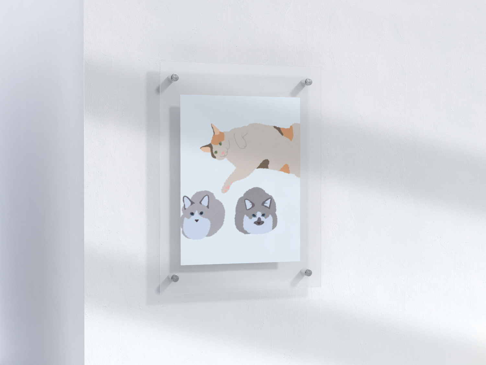

Hello World.
I am Makoto
a co-op student based in Vancouver, Canada
My Story
I am passionate about the intersection of Web Development and Data Science. I love building intuitive web interfaces while also diving deep into data to uncover meaningful insights.
Coming from a psychology background, I am fascinated by how people interact with digital environments. My goal is to blend analytical problem-solving with creative design to build applications that genuinely help people.
Future Vision
I want to use my combined knowledge of psychology and technology to improve everyday Quality of Life (QOL). Specifically, I am focused on creating app in the everyday health and mental care space as well as platforms dedicated to study and learning support to help others document and track their educational journeys.
What Drives Me
Studious
- Web Dev & Data Science
- Psychology
- Languages (JA, EN, and exploring ES, FR, KO)
Fun Stuff
- Digital & Traditional Illustration
- Musicals & Playing Instruments
- Traveling & Lifelong Learning

Love
Animals! Especially my 3 wonderful cats.